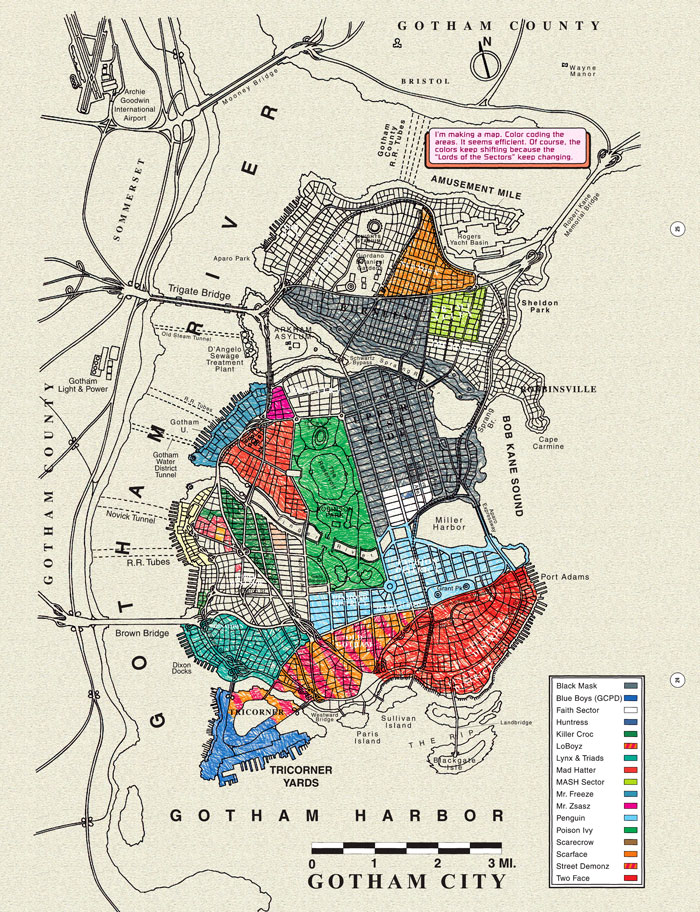
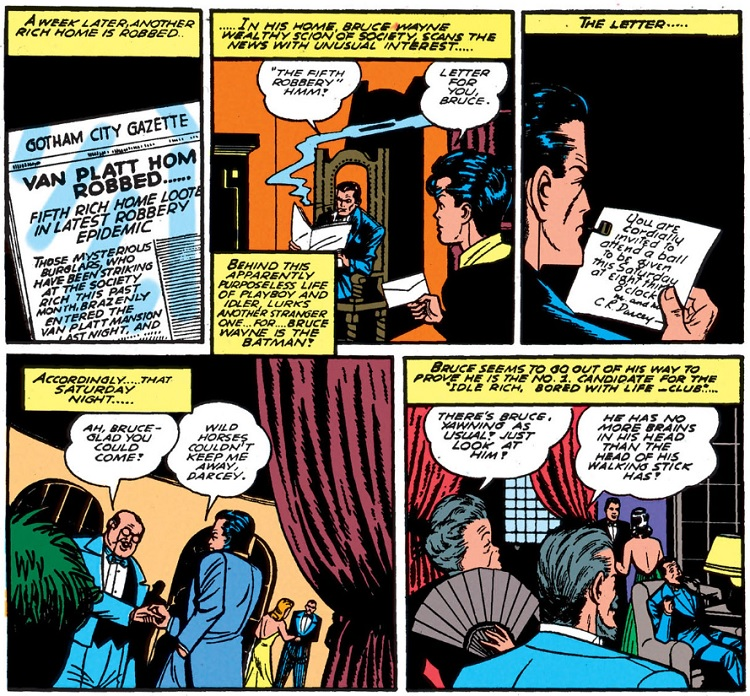
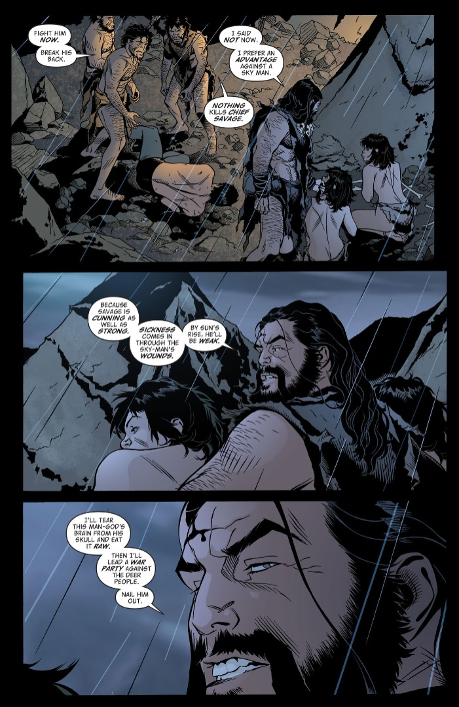

Between the imminent release of the open world Gotham Knights video game and the launch of Tom King and Phil Hester’s Gotham City: Year One, Batman’s city is suddenly very much in the spotlight. And while we imagine you’ve heard of Gotham City, how much do you actually know about it? Where did Gotham City come from? Who are its founders? And why is it called that? If you’ve ever wondered, consider this your essential guide to the city.
Short Info

Main info
Gotham’s True Beginnings

While Batman has been fighting crime across city rooftops since Detective Comics #27 in 1939, he wouldn’t technically be doing it in Gotham City until Batman #4 in 1941. That’s the first time that Batman’s city is given its own name in the comics—before that point, Batman was apparently operating in New York. (This was a couple months after Batman stopped using guns in his early appearances. So next time someone tells you Batman used to use guns, you can tell them, “Well, only in New York.”)
Interestingly, Batman #4 isn’t the first comic book appearance of a place called Gotham City. That distinction, by just a few scant weeks, goes to Fawcett Comics’ Wow Comics #1, as the name given to the home of the hero Mister Scarlet. Even after DC acquired Fawcett’s characters in the 1970s, though, Batman and Mister Scarlet have never discussed this. Like all other Fawcett characters up until the New 52, Mister Scarlet, when mentioned at all, was said to operate in Fawcett City.
The Land Before Gotham

That’s why Gotham is called “Gotham,” extrinsically. But if you’d like to know the history of Gotham from the citizens’ own perspective, well, that’s a different story.
The history of the island where Gotham now stands is uncertain at best. It was once home to the Native American Miagani people, first named in Batman: The Cult and explored further in the time-traveling adventures of Batman in Batman: The Return of Bruce Wayne. In a bit of circular history, the Miagani people came to revere the bat due to the intervention of Batman himself, who aided in their fight for survival against a relatively young Vandal Savage. The Miagani remained in Gotham until Jonah Hex’s day in the 19th century, but are now considered extinct—though the cult leader Deacon Blackfire claims to speak for them today.
In the 2006 Shadowpact series, the strangeness of Gotham City in particular is accredited to the island being the burial tomb of an immortal warlock whose spirit calls himself “Doctor Gotham,” his dark presence driving the very foundation of the city built upon his resting place to madness. This account may be considered apocryphal, though. Perhaps there is a Doctor Gotham, but it may be a stretch to give him credit for the entire city’s direction just by proximity.